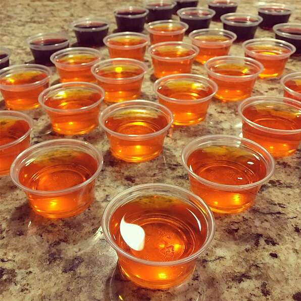

Fruit Shots

It's Jello with a kick. Vodka is mixed with any fruit flavored gelatin and drunk in a shot glass.
Not for Kids.
Ingredients
- 1 package fruit flavored Jell-O mix
- 2 cups boiling water
- 1.25 cups vodka, chilled
- 3/4 cup cold water
Steps
- In a large bowl, mix boiling water with gelatin. Stir until gelatin dissolves. Stir in vodka and cold water. Pour mixture into plastic shot glasses and chill in refrigerator for 1 hour, or until set.
- Once set, remove and enjoy.
Home